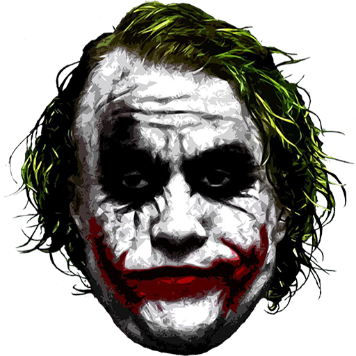

- Joker
- Lex Luthor
- Magneto
- Venom
- Apocalipsis
- Thanos
- El duende Verda
- Doctor Muerte
- King Ping
- Ultron
Joker
Es un superhéroe que aparece en los cómics de Marvel
Joker (conocida como Guasón en Hispanoamérica) es una película de suspenso y drama psicológico estadounidense de 2019 distribuida por Warner Bros. Pictures y basada en el Joker, personaje de DC Comics. Es la primera de una serie de películas basadas en DC separadas del universo extendido de DC (DCEU). La película fue dirigida por Todd Phillips a partir de un guion escrito junto con Scott Silver. Está protagonizada por Joaquin Phoenix como el personaje principal, acompañado por Robert De Niro, Zazie Beetz y Frances Conroy, entre otros. El 27 de octubre de 2019 se convirtió en la película clasificación R más taquillera de la historia, superando a Deadpool.3 Mientras que para el 15 de noviembre de 2019, se convirtió en la primera película de clasificación R en superar los 1000 millones en taquilla.
Phillips concibió a Joker en 2016 y escribió el guion con Silver a lo largo de 2017. Los dos se inspiraron en los estudios de personajes de la década de 1970 y las películas de Martin Scorsese (particularmente Taxi Driver y El rey de la comedia), que inicialmente se unió al proyecto como productor. La novela gráfica Batman: The Killing Joke (1988) fue la base de la premisa, pero Phillips y Silver no buscaron inspiración en cómics específicos. Phoenix se unió en febrero de 2018 y fue elegido ese julio, mientras que la mayoría del elenco firmó en agosto. La fotografía principal se realizó en Nueva York, Jersey City y Newark, de septiembre a diciembre de 2018. Joker es la primera película teatral de acción en vivo de Batman en recibir una calificación R. Joker se estrenó en el 76 ° Festival Internacional de Cine de Venecia el 31 de agosto de 2019,56 donde ganó el León de Oro,789 y fue lanzado en los Estados Unidos el 4 de octubre de 2019. La película polarizó a los críticos; mientras que la actuación de Phoenix, la dirección de Phillips, la partitura musical, la cinematografía y los valores de producción fueron elogiados, el tono oscuro, la descripción de la enfermedad mental y el manejo de la violencia dividieron las respuestas.10 Joker también generó preocupaciones de inspirar violencia en el mundo real; el cine donde se produjo el tiroteo masivo en 2012 en Aurora, Colorado, durante una proyección de The Dark Knight Rises se negó a mostrarlo. A pesar de esto, la película se convirtió en un gran éxito de taquilla, estableciendo récords para un estreno en octubre. Joker ha recaudado más de mil millones de dólares, por lo que es la primera película con clasificación R en hacerlo, la séptima película más taquillera de 2019 y la 32a película más taquillera de todos los tiempos.